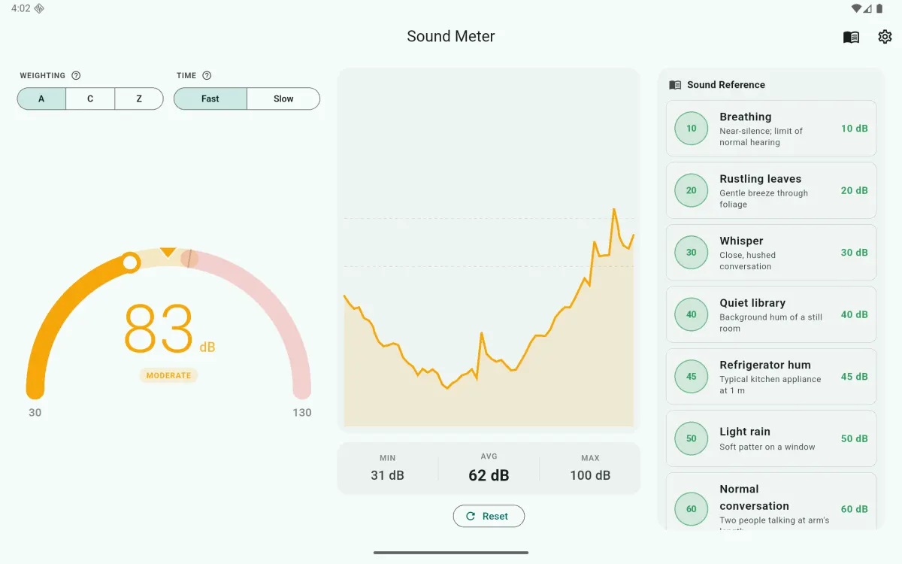

No. 01 · Measurement utility · Specification sheet
Sound Meter — Decibel dB Meter
A free sound level meter for Android, by Forgeline.
Sound Meter is a free Android app that measures ambient loudness with the phone's microphone and shows an approximate sound pressure level in decibels (dB). It is a decibel meter for everyday use: checking how loud a room, a street, an office, or an event is, and comparing one situation with another. It works fully offline, has no ads in the current version, and requires no account.
- Platform
- Android
- Price
- Free; no ads in the current version
- Current version
- 1.0.1
- Package name
- com.uzairalimurtaza.soundmeter
- Developer
- Forgeline
- Get it
- Sound Meter on Google Play
- Privacy
- Privacy policy — no data collection
Screens



What it measures
The app reads the microphone signal, computes its level in real time, and displays it as an approximate sound pressure level in dB. The gauge covers 30 to 130 dB; internally, readings are clamped to the range 20–130 dB. The display updates live while the app is open and measuring; the meter runs only while you are using it.
Features
- Live arc gauge with color zones: green below 70 dB, amber from 70 to 85 dB, red at 85 dB and above. A peak-hold marker shows the highest recent reading.
- Rolling trend chart of the level over the recent past.
- Session statistics: minimum, maximum, and average level for the current measuring session.
- A, C, and Z weighting toggles. These are implemented as a documented broadband approximation using fixed offsets, not as per-frequency IEC 61672 filters. They shift the reading in the direction the standard weightings would for typical broadband noise, but they are not filter-accurate.
- Fast and Slow time response. Genuine exponential time-averaging with the conventional sound-level-meter time constants: 125 ms (Fast) and 1 s (Slow).
- Manual calibration slider, adjustable by ±15 dB, so readings can be aligned against a known reference level.
- Reference guide of 19 everyday sounds (for example a quiet room, normal conversation, city traffic) with their typical levels, for context.
- Hearing-safety advisory shown when the level is above 85 dB, based on WHO and NIOSH guidance on noise exposure.
- Dark mode, and full offline operation. No account, and no ads in the current version.
Accuracy
Phone microphones differ by several dB between models, and none of them is a laboratory instrument. Readings from Sound Meter are estimates, useful for screening and for comparing one situation with another. The app is not a certified measurement instrument and does not meet IEC 61672 Type 2 requirements. Calibrating the app against a known reference — for example a dedicated sound level meter reading taken in the same place — improves the consistency of its readings on your particular device.
Privacy
Audio is processed on the device, in real time, for one purpose: computing the current sound level. It is never recorded, stored, or uploaded. The app collects no data of any kind — no account, no analytics, no tracking. The full policy is published at uzairalimurtaza.github.io/soundmeter-privacy.
Get the app
Sound Meter is available on Google Play: play.google.com/store/apps/details?id=com.uzairalimurtaza.soundmeter.
Questions about the app can be sent to uzairalimurtaza@gmail.com.